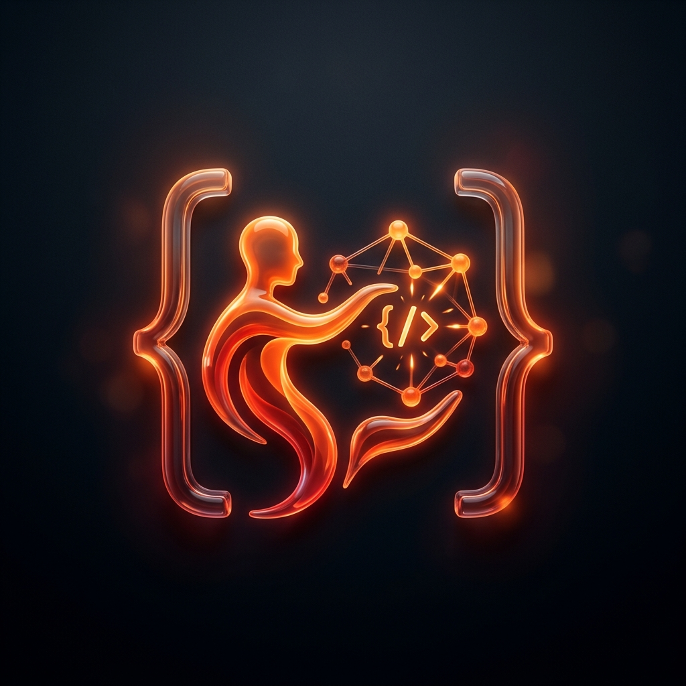
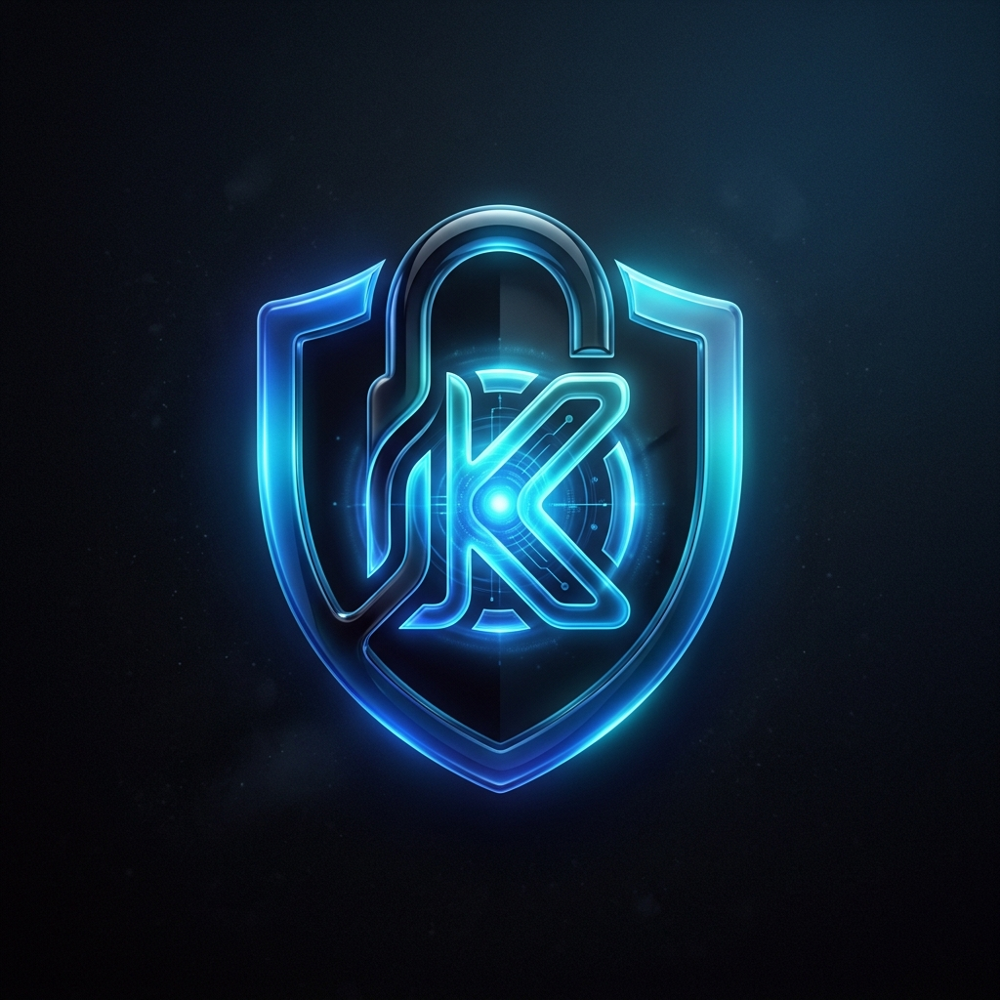

Projects
Lifestyle & Wellness System
Sep '25 – Oct '25

Lifestyle & Wellness System | ML
- Built an end-to-end ML-powered web app predicting health risk levels and wellness scores.
- Designed rich visual analytics including feature correlation heatmaps and interactive gauges.
- Delivered an interactive, app-like interface for personalized wellness insights.

AI Coding Mentor
Apr '25 – May '25

AI Coding Mentor | JS, Python
- Developed an AI-powered coding assistant providing real-time feedback and contextual explanations.
- Implemented full-stack system with dark mode UI, quiz generation, and PDF exports.
- Delivered an interactive platform featuring instant debugging and tutorial generation.

Secure System Call Interface
Feb '25 – Mar '25

Secure System Call | Flask, JWT
- Developed secure interface with JWT authentication, preventing unauthorized access.
- Implemented RBAC, MFA-ready auth, and detailed logging for operations.
- Built web interface to safely execute commands with real-time log monitoring.
Lifestyle & Wellness Intelligence System | Html, CSS, ML Stack, ML Models | GitHub
Sep '25 – Oct '25
- Built an end-to-end ML-powered web app that predicts health risk levels and wellness scores from lifestyle data using Logistic Regression, KNN, Naive Bayes, Random Forest, and Linear Regression.
- Designed rich visual analytics including feature correlation heatmaps, model accuracy comparison charts, stress-sleep and BMI-risk relationships, and interactive gauges for real-time prediction.
- Delivered an interactive, app-like interface that provides explainable predictions, personalized wellness insights, and actionable lifestyle recommendations to support better long-term health decisions.
AI Coding Mentor | Html, CSS, JavaScript, Python, Google API | GitHub
Apr '25 – May '25
- Developed an AI-powered coding assistant that provides real-time feedback, contextual explanations, and personalized learning support for beginners to advanced learners, addressing gaps like inconsistent guidance.
- Implemented a full-stack system using HTML, CSS, JavaScript (frontend), Integrated AI-based explanation modules, dark mode UI, dynamic quiz generation, PDF export features, and multi-language support.
- Delivered an interactive learning platform featuring instant debugging, step-by-step tutorial generation, and quiz.
Secure System Call Interface | Html, CSS, JavaScript, Python | GitHub
Feb '25 – Mar '25
- Developed a secure system-call execution interface using Python & Flask with JWT authentication, preventing unauthorized access and enhancing OS-level security.
- Implemented role-based access control (RBAC), MFA-ready authentication, and detailed logging enabling tracked, auditable system call operations for admins.
- Built a user-friendly web interface (HTML, CSS, JS) to safely execute controlled system commands featuring real-time log monitoring and restricted command execution.